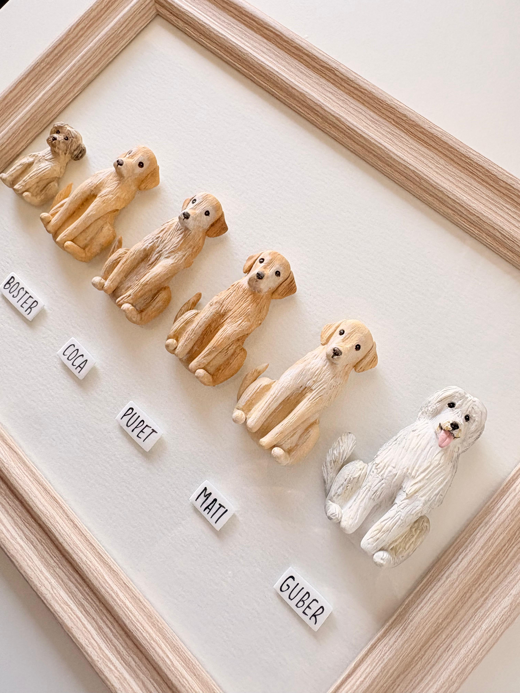
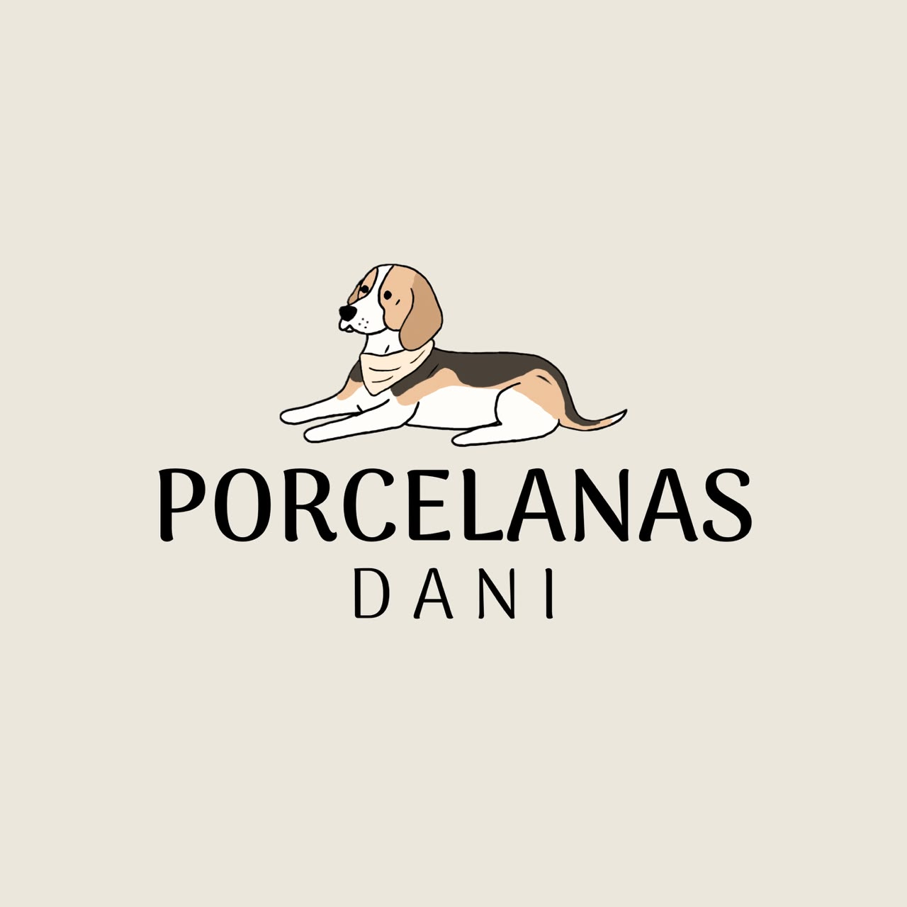

MASCOTAS CONVERTIDAS EN ARTE
Porcelanasdani nace de una tarde de juego y aprendizaje, inspirada en la exploración y la manipulación de materiales con las manos. Lo que comenzó como una actividad creativa se transformó poco a poco en una forma de expresar la alegría y la ternura que nos transmiten los animales.
El proyecto comenzó a darse a conocer durante la celebración de un cumpleaños, cuando una comensal pidió replicar la figura de un animal que había quedado sobre la mesa del comedor de la casa. Aquel sencillo encargo marcó el inicio de una idea que, con el tiempo, fue creciendo hasta convertirse en lo que hoy es Porcelanasdani, una comunidad que reúne a más de veinte mil seguidores en redes sociales.
Te invito a conocer nuestro trabajo y las distintas obras que son elaboradas a mano por la autora.